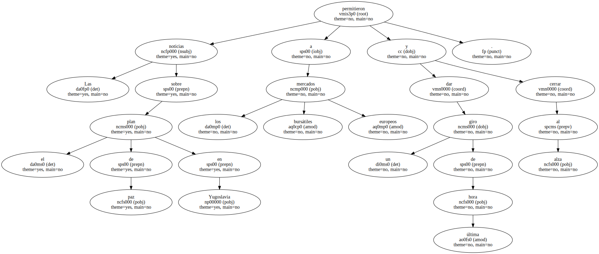
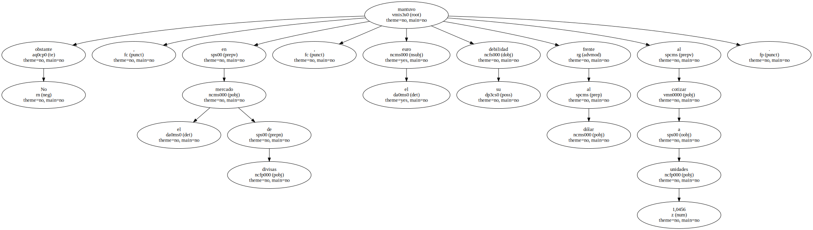
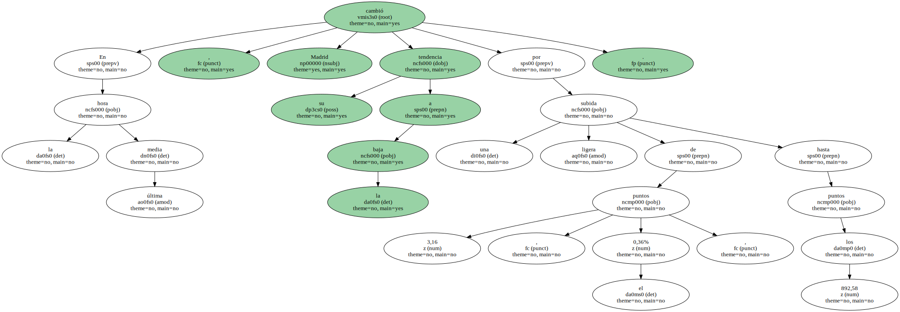
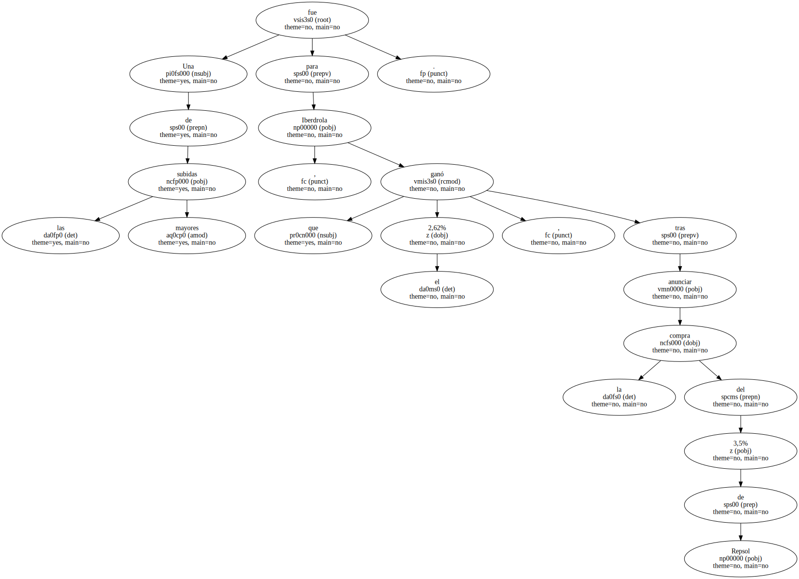
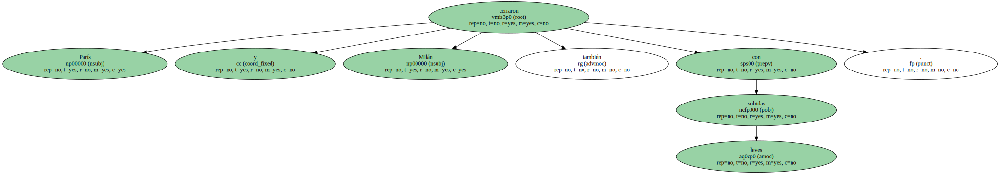
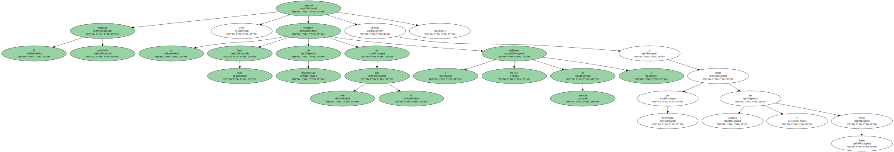
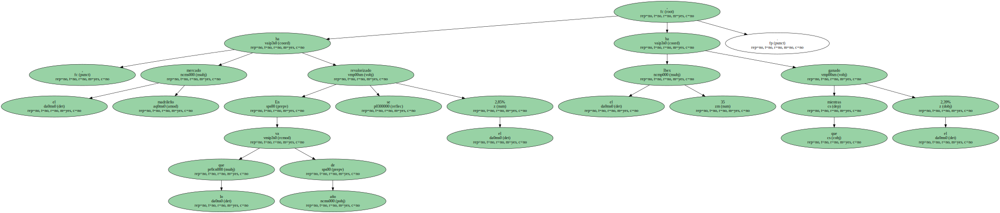

Las noticias sobre el plan de paz en Yugoslavia permitieron a los mercados bursátiles europeos dar un giro de última hora y cerrar al alza.
No obstante , en el mercado de divisas , el euro mantuvo su debilidad frente al dólar al cotizar a 1,0456 unidades.
En la última media hora , Madrid cambió su tendencia a la baja por una ligera subida de 3,16 puntos , el 0,36% , hasta los 892,58 puntos.
Una de las mayores subidas fue para Iberdrola , que ganó el 2,62% , tras anunciar la compra del 3,5% de Repsol.
Una de las mayores subidas fue para Iberdrola , que ganó el 2,62% , tras anunciar la compra del 3,5% de Repsol.
París y Milán también cerraron con leves subidas.

Francfort perdió el 0,05%.
El mercado madrileño registró ayer el más bajo volumen de negociación de todo el año ( 69.715 millones de pesetas ) debido al cierre por festividad en Londres y Wall Street.
En lo que va de año , el mercado madrileño se ha revalorizado el 2,85% , mientras que el Ibex 35 ha ganado el 2,39%.